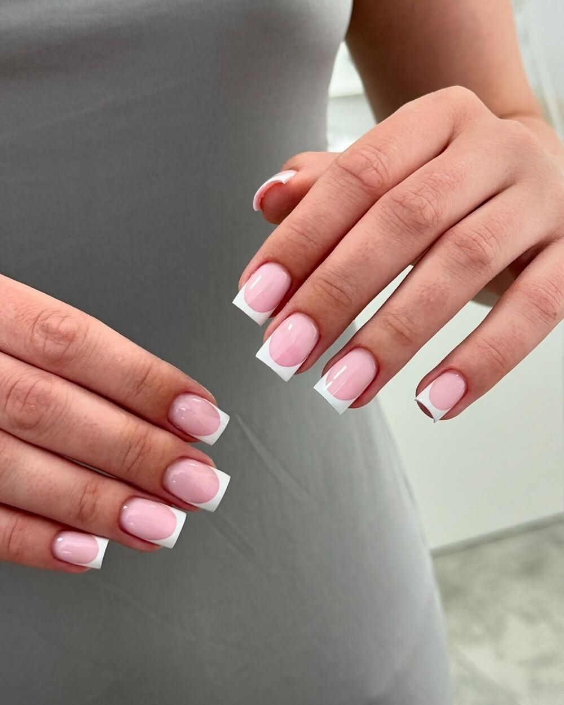

Хотите, чтобы руки были в том же порядке, что и стопы? Сделаем маникюр стерильно
Маникюр, долговременное покрытие, наращивание и ремонт. Инструмент проходит тот же путь через автоклав, что и в кабинете подолога.

- времядлительность уточним по прайсу
- от 80 BYNманикюр с долговременным покрытием
- Автоклавинструмент стерилизуется паром
Что входит в раздел
В прайсе одиннадцать позиций: сам маникюр, покрытия, наращивание, снятие, ремонт и дизайн. Полный список с ценами появится здесь после сверки с прайсом студии.
- МаникюрОбработка кутикулы и формы ногтя аппаратом
- Долговременное покрытиеДержится дольше обычного лака
- НаращиваниеЕсли своя пластина тонкая или короткая
- Снятие, ремонт, дизайнОтдельные позиции прайса
Стерильность здесь та же, что в кабинете подолога. Это единственное, в чём маникюр у нас отличается от обычного салона, и это несложно проверить.
Как проходит приём
Сначала осмотр и разговор, потом план. Что именно сделаем, зависит от случая.
Маникюр с покрытием
Что делаемОбрабатываем кутикулу и форму, наносим долговременное покрытие. Самая частая позиция раздела.
Наращивание
Что делаемЕсли своя пластина ломается или отрастает неровно. Цены и материалы появятся здесь после сверки с прайсом.
- Наращиваниеуточняется
Снятие и ремонт
Что делаемСнимаем старое покрытие, чиним скол, приводим форму в порядок.
- Снятие покрытияуточняется
- Ремонт ногтяуточняется
Какая ситуация у вас, скажем на осмотре. До начала работы называем цену.
Будет ли больно? Маникюр проходит без боли: работаем аппаратом, кутикулу не срезаем. Если кожа вокруг ногтя воспалена, скажем об этом и предложим сначала обработку.
Сколько визитов и когда виден результат
Зависит от того, с чем пришли. Три типичных случая.
| Случай | Визитов | Интервал | Когда виден результат |
|---|---|---|---|
| Маникюр с покрытиемплановый визит | уточняем | уточняем | уточняем |
| Наращиваниекоррекция с интервалом | уточняем | уточняем | уточняем |
| Снятие и ремонтразовый визит | уточняем | уточняем | уточняем |
Цифры заполняет студия по своей практике. Точный план скажем на осмотре.
До и после
Фотографии по этой проблеме предоставит студия.
Здесь встанет серия по одному случаю: кадр до первого визита, кадр сразу после обработки и кадр через несколько недель, с датами.
Нужны: 2–3 случая по этой проблеме, снятые при одинаковом свете, и письменное согласие клиента на публикацию.
фото от заказчика
Цены
В разделе одиннадцать позиций, здесь показана основная. Остальные подставим из прайса студии.
- Маникюр с долговременным покрытием80 BYNпо карточке студии на Яндекс Картах
- Наращивание, снятие, ремонт, дизайн11 позицийостальные позиции раздела
Кто выполняет
При записи можно выбрать специалиста.

Если сложно выбрать, администратор подскажет при записи.